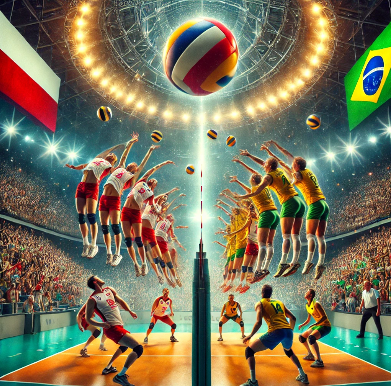
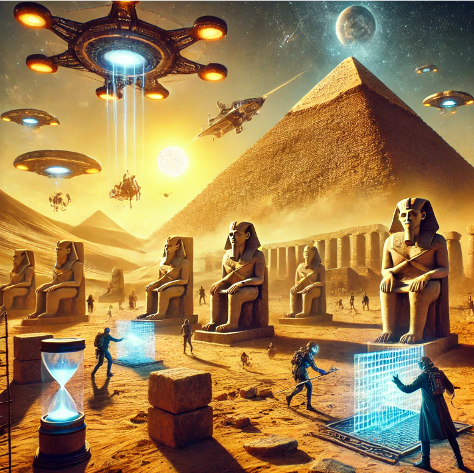
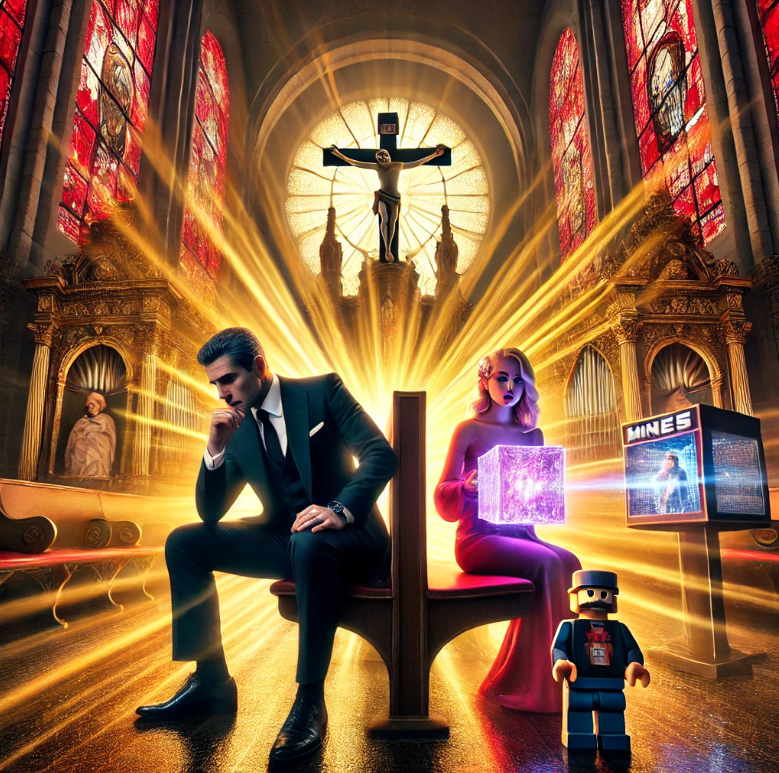
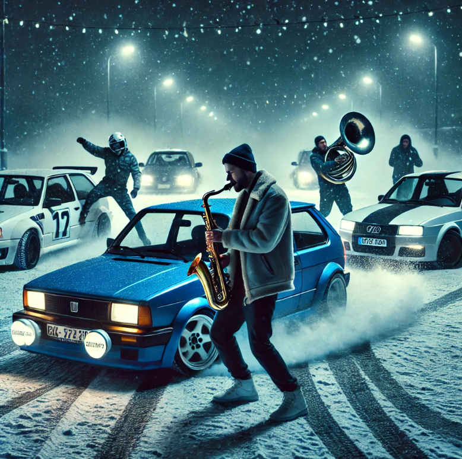

Scena 1: Ania śpiewająca w deszczu
Ania, stojąc pod rozświetloną latarnią, śpiewa "Mafia - Imię Deszczu", podczas gdy wokół niej pada delikatny deszcz. Noc jest ciemna, oświetlona odległymi neonami, a jej głos rozbrzmiewa z przejmującym pięknem. Krople deszczu błyszczą jak diamenty, odbijając głębokie emocje w jej pieśni.

Scena 2: Siatkarski pojedynek na dwie piłki
Polska i Brazylia mierzą się w intensywnym meczu siatkarskim, w którym obie drużyny równocześnie serwują, wprowadzając do gry dwie piłki. Tłum szaleje z ekscytacji, a zawodnicy z niezwykłą zręcznością radzą sobie z chaosem. Arena wibruje energią, a ich zwinność staje się centrum uwagi w tej surrealistycznej grze.
Scena 3: Taniec Crystallize
Seba gra na saksofonie w centrum grupy tancerzy, których ruchy są zsynchronizowane do utworu Lindsey Stirling "Crystallize". W międzyczasie Bartek driftuje swoim BMW M5 w idealnych okręgach wokół nich na lodowej nawierzchni. Neonowe światła rozświetlają scenę, tworząc elektryzującą atmosferę.

Scena 4: Podróż w czasie do piramidy Cheopsa
Grupa przenosi się do starożytnego Egiptu, gdzie budowana jest piramida Cheopsa. Ku ich zaskoczeniu, robotnicy korzystają z zaawansowanej technologii kosmitów, komputerów kwantowych i sztucznej inteligencji. Scena zmienia się między starożytnymi narzędziami a futurystycznymi hologramami, łącząc dwa światy w jeden.
Scena 5: Programistyczny hackathon
W sercu futurystycznego podziemnego laboratorium, oświetlonego delikatnym blaskiem holograficznych ekranów, panuje atmosfera intensywnej koncentracji. Zespół – Ania, Bartek, Wiktor i Beata – zebrał się wokół centralnego stołu. Każdy z nich wpatruje się w migoczące linijki kodu wyświetlane na półprzezroczystych monitorach zawieszonych w powietrzu. Ekrany ożywają – cyfrowe drzewa i symulacje ekosystemów powstają w czasie rzeczywistym, prezentując ich rewolucyjny projekt sztucznej inteligencji o nazwie "EcoMind". To system, który ma monitorować zmiany klimatyczne, przewidywać katastrofy naturalne i optymalizować wykorzystanie zasobów naturalnych. Każda linia kodu to krok w kierunku ratowania planety. W pewnym momencie alarm rozbrzmiewa w całym laboratorium. Hologram przedstawia ostrzeżenie – ktoś próbuje włamać się do ich systemu. Złośliwy cyberatak z zewnątrz zaczyna zakłócać działanie projektu. Na ekranach zaczynają pojawiać się czerwone błędy, symulacje załamują się, a wirtualne ekosystemy zamierają. Bartek przejmuje dowodzenie. "Ania, zabezpiecz dane. Wiktor, sprawdź logi systemowe. Beata, uruchom backup!" – jego głos brzmi stanowczo. Wiktor rzuca się na konsolę diagnostyczną, przeglądając linijka po linijce ruch sieciowy. Ania z prędkością błyskawicy uruchamia zabezpieczenia, a Beata aktywuje systemy awaryjne. Napięcie w pomieszczeniu sięga zenitu. Ich umiejętności programistyczne są wystawiane na próbę. Ekrany wypełniają się migoczącymi liczbami, wskaźnikami i schematami. Każda sekunda jest na wagę złota. W kulminacyjnym momencie Ania odkrywa punkt wejścia ataku – źródłem jest botnet symulujący aktywność z kilku różnych krajów. Beata wprowadza tymczasową zaporę, a Wiktor i Bartek wspólnie pracują nad stworzeniem przeciwnych skryptów, które mają przechytrzyć intruzów. Gdy ostatnia linia kodu zostaje wprowadzona, zespół wstrzymuje oddech. Holograficzne ekrany wracają do normy, symulacje ponownie ruszają, a projekt "EcoMind" zostaje uratowany. Na ich twarzach pojawia się ulga, a chwilę później szerokie uśmiechy – udało się. Laboratorium wypełnia oklaski, a holograficzny wyświetlacz ukazuje napis "System Secure". Zespół, choć wyczerpany, wie, że przeszedł przez coś wyjątkowego. Był to nie tylko test ich umiejętności, ale także dowód na siłę współpracy i determinacji.
Scena 6: Muzyczny pojedynek Cyrila i Maryjo
W wielkiej arenie koncertowej odbywa się oszałamiający pojedynek muzyczny. Cyril i Maryjo zajmują centralną scenę, a ich melodie przeplatają się w epickim duecie. Publiczność jest zahipnotyzowana, a holograficzne wizualizacje dodają widowisku niesamowitego charakteru.

Scena 7: Powrót Bartka do 1997 roku
Bartek przenosi się do 1997 roku, odnajdując się w nostalgicznej scenerii pełnej retro klimatów. Ulice tętnią życiem starymi hitami tanecznymi, a Bartek przeżywa swoją młodość z poczuciem zachwytu i ekscytacji.

Scena 8: Bartek z 1997 roku spotyka 2011
Bartek z 1997 roku zostaje przeniesiony do 2011 roku, gdzie obserwuje narodziny swojego syna Wiktora. Emocjonalny moment jest wzmocniony surrealistycznym kontrastem młodszej wersji siebie, która doświadcza tego przełomowego wydarzenia.


Scena 9: Epicka walka na pasie startowym lotniska Tegel
Na pasie startowym lotniska Tegel w Berlinie, Wiktor i Torpeda toczą epicką walkę pod blaskiem świateł lotniska. Walka jest intensywna, łącząc sztuki walki i akrobatykę, a zimne powietrze dodaje dramatyzmu.


Scena 10: Spotkanie w katedrze w Fatimie
W spokojnej scenerii katedry w Fatimie, Bartek klęczy w modlitwie, oddając się intensywnej refleksji niczym hitman w konfesjonale. Nagle pojawiają się Beata i Wiktor z 2011 roku, wywołując emocjonalne spotkanie pełne wzruszeń i przemyśleń.
Scena 11: Zimowy koncert i pokaz driftu
W zimowy wieczór na parkingu Opolanki, Seba daje hipnotyzujący koncert na saksofonie, podczas gdy Wiktor, Beata i tajemnicza brunetka wykonują zapierające dech w piersiach ewolucje samochodowe wokół niego. Scena kulminuje w zsynchronizowanym występie muzyki i ruchu.
Scena 12: Wyścig do Niemodlina – Portal do Autobiografii
Jest noc, 2025 rok. Bartek Lemiesz rozpoczyna budowę tajemniczego portalu do autobiografii, ale jego działania nie pozostają niezauważone. Wiktor, Beata i inni bohaterowie formują drużynę, by go powstrzymać. Rozpoczyna się dynamiczny wyścig do Niemodlina. Nocne drogi oświetlane są przez reflektory samochodów. W tle rozbrzmiewa utwór "DJ Tiesto - Traffic". Drift, kontrolowane poślizgi i adrenalinowa rywalizacja wprowadzają widza w świat akcji i tajemnic. Kiedy Bartek w końcu staje przed portalem, napięcie osiąga zenit – czy zespół zdąży go powstrzymać?
Scena 13: Pierwszy Pocałunek – Bartek i Beata
Rok 2004, ciepły czerwcowy wieczór. Bartek i Beata, młodzi i pełni marzeń, spacerują alejkami pełnymi kwitnących drzew. W tle gra spokojna melodia, świat zdaje się zwalniać tylko dla nich. O godzinie 21:40 zatrzymują się, wymieniając spojrzenia pełne uczuć. To chwila, której nie da się zapomnieć – pierwszy pocałunek. Cała scena jest subtelna, romantyczna, z lekką nutą młodzieńczej niepewności. Przyroda zdaje się uczestniczyć w tym wydarzeniu, a widz czuje magię tej chwili.

Scena 14: Narodziny Wiktorii
Jest rok 2026, kwiecień, dokładnie 14. Bartek i Beata witają na świecie swoją córkę, Wiktorię. Scena odbywa się w futurystycznym szpitalu, gdzie nowoczesna technologia i ludzka troska łączą się w jedno. Bartek, trzymając nowo narodzoną Wiktorię w ramionach, nie kryje łez wzruszenia. Beata, mimo zmęczenia, wygląda promiennie, trzymając Bartka za rękę. W tle słychać delikatną melodię, symbolizującą nowy początek. Całość jest pełna emocji, miłości i nadziei na przyszłość.
Scena 15: Ślub Agnieszki i Carlo – Szachowe Połączenie
24 lipca 2014 roku, letni dzień pełen radości i emocji. W zabytkowej katedrze odbywa się ślub Agnieszki i Carlo. Agnieszka, w swojej zachwycającej sukni ślubnej, i Carlo, w eleganckim garniturze, wyglądają jak z bajki. Jednak to nie jest zwyczajny ślub – na dziedzińcu katedry rozłożona jest gigantyczna szachownica. Para młoda decyduje się na symboliczne złożenie przysięgi poprzez grę w szachy. Podczas gry, każdy ruch symbolizuje ich wspólne życie, pełne zaufania i harmonii. Kulminacją jest „szach-mat” – Carlo ogłasza zwycięstwo, a para w tym momencie przysięga sobie miłość na całe życie. W tle gra saksofon Seby Sładka, dodając scenie melancholijny, a jednocześnie triumfalny ton.